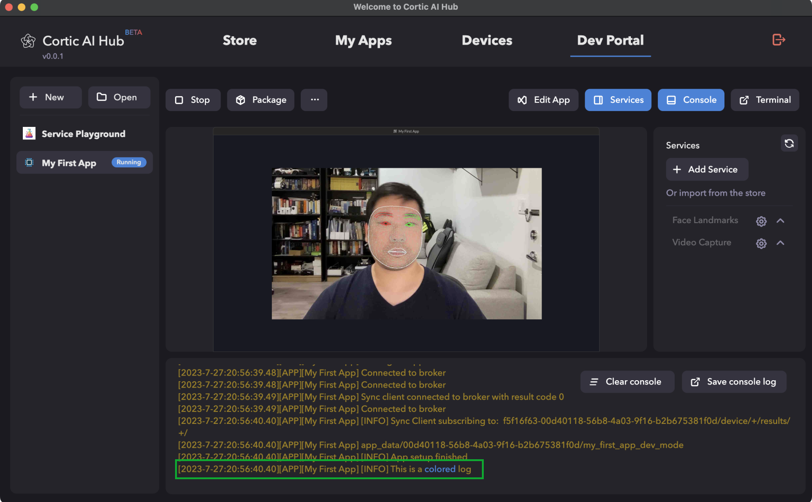
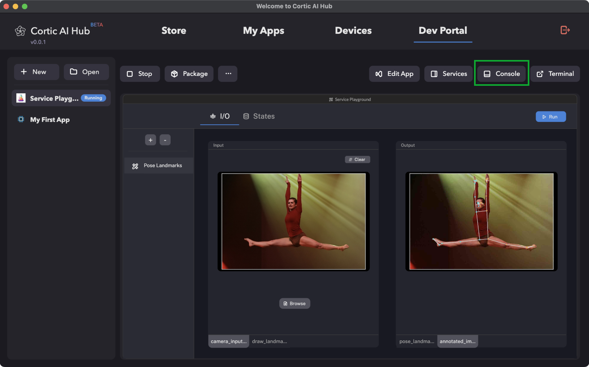
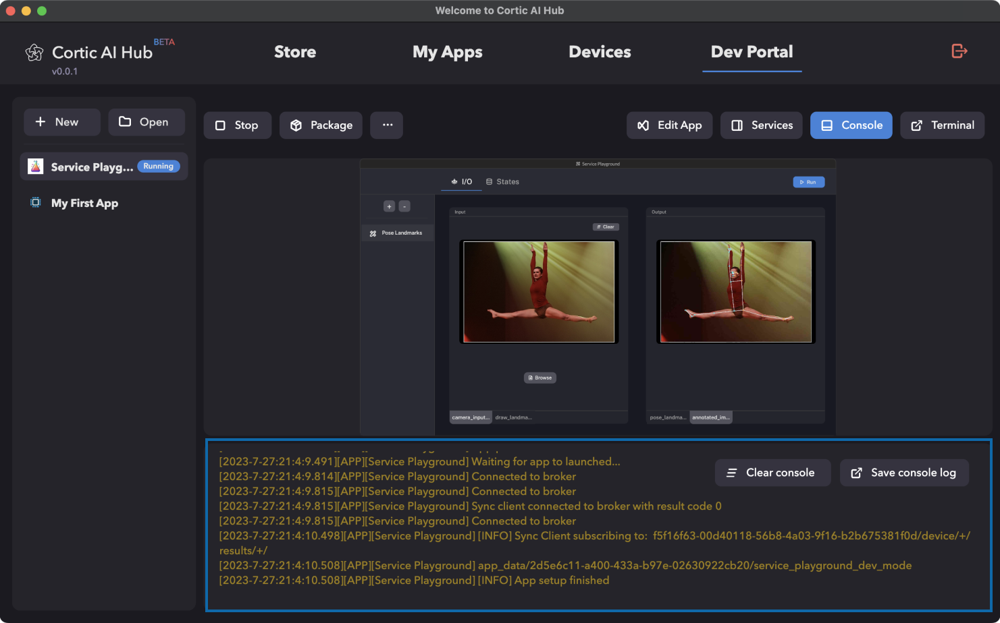
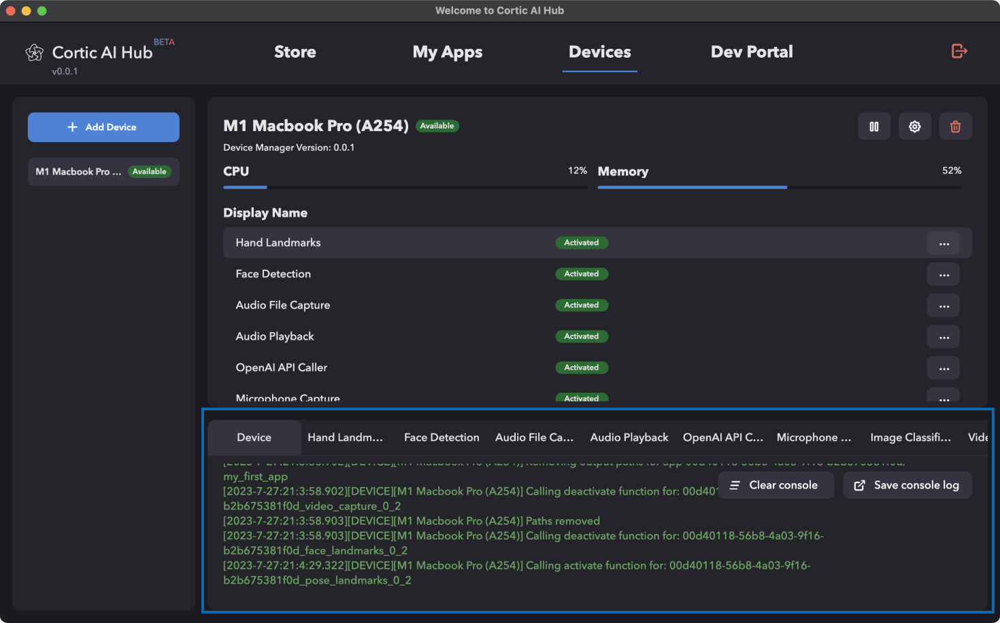
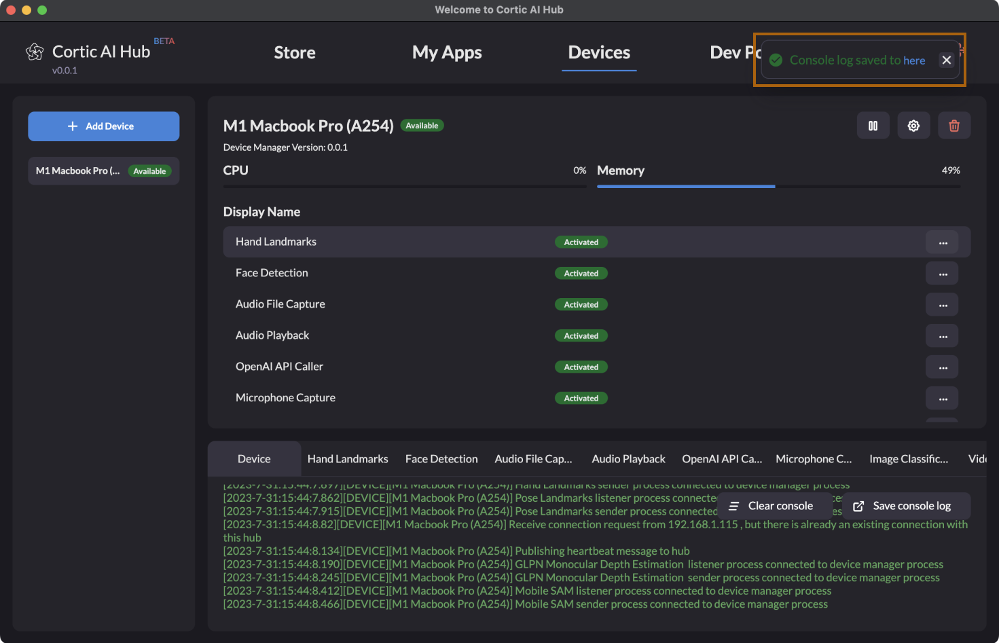
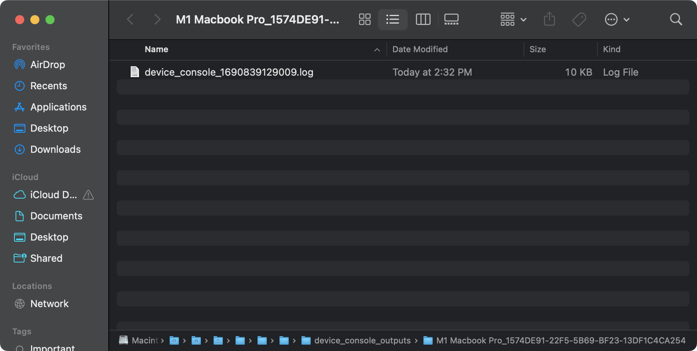
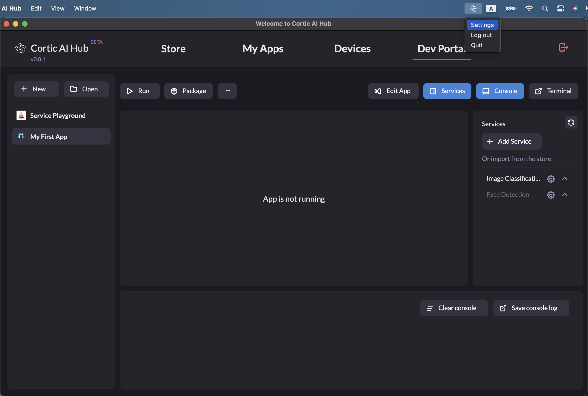
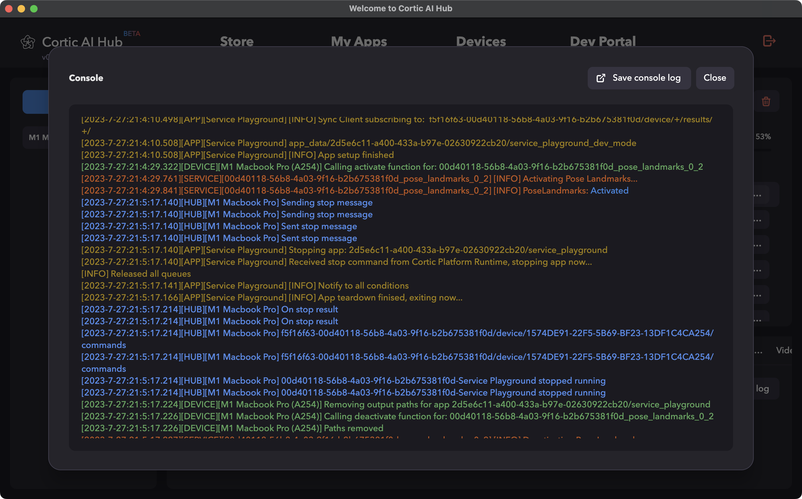

Logging Basics for the Cortic Platform SDK
Understanding and effectively utilizing the logging module in the Cortic Platform SDK is paramount for ensuring
efficient debugging and problem-solving. This guide seeks to provide comprehensive instructions on leveraging
the logging features.
1. Introduction to Logging Levels
The Cortic Platform SDK's logging module classifies logs into three primary levels:
- Info: General messages providing runtime information about the application.
- Warning: Messages indicating potential issues or warnings which might not necessarily
disrupt the application.
- Error: Critical messages denoting failures or errors that disrupt the normal functioning of
the application.
2. Custom Coloured Log Messages with Color Tag
You can enhance your logging experience with custom color outputs. To use the color tag for custom-colored log
messages, follow the procedure below:
- While creating a log message, use the
color tag to specify your desired color.
- Ensure the selected color aligns with the severity of the log message to provide intuitive feedback.
An example of a custom-colored log message is shown below:
log("This is a <p style='color:blue'>colored</p> log", log_level=LogLevel.Info)
The above code snippet will produce the following output in the console:

3. Locating Logging Output in the Cortic AI Hub UI
The Cortic AI Hub user interface segregates log outputs for devices, apps, and services. To locate them:
- Under the Dev Portal tab, click on "Console" on the top right to display the app console output. The console
will show all logging message coming from the currently running app.


- Under the Devices tab, select a device on the left hand side. The console will always be shown at the
bottom. It contains various sub tabs. The first sub tab with the name "Device" will show logging messages
coming from this device. Other sub tabs show logging messages for each deployed service on a device.

4. Finding Written Log Files in the Filesystem
All logging outputs are also systematically written and stored within the system's filesystem. To find these log
files:
- After pressing the "Save console log" button in any of the console view, the Cortic AI Hub will save the
log file to the filesystem. A message will be displayed with a clickable link (the blue "here" text) to the
log file.

- Click on the link to open the folder containing the log files.
- Here, you'll find the log file that was just saved.

5. The Master Log
The master log is an aggregate log that combines messages from the entire hub, inclusive of all apps, devices,
and services. It serves as a consolidated record for all logging activities. You can view the master log from
the Setting menu from the Cortic AI Hub's system tray icon.


6. Importance of Logging
Logging is indispensable for software development and maintenance. Here's why:
- It provides insights into the application's behavior in real-time.
- Helps in troubleshooting and identifying issues during development and post-deployment phases.
- Facilitates quicker resolution of errors by pinpointing their sources.
Next Steps
Now that you have a foundational understanding of the logging basics within the Cortic Platform SDK, consider
exploring the following:
- Dive deeper into advanced logging strategies and best practices.
- Understand the integration of the logging module with external monitoring and alerting tools.
- Experiment with creating custom logging formats to tailor the outputs to specific requirements.